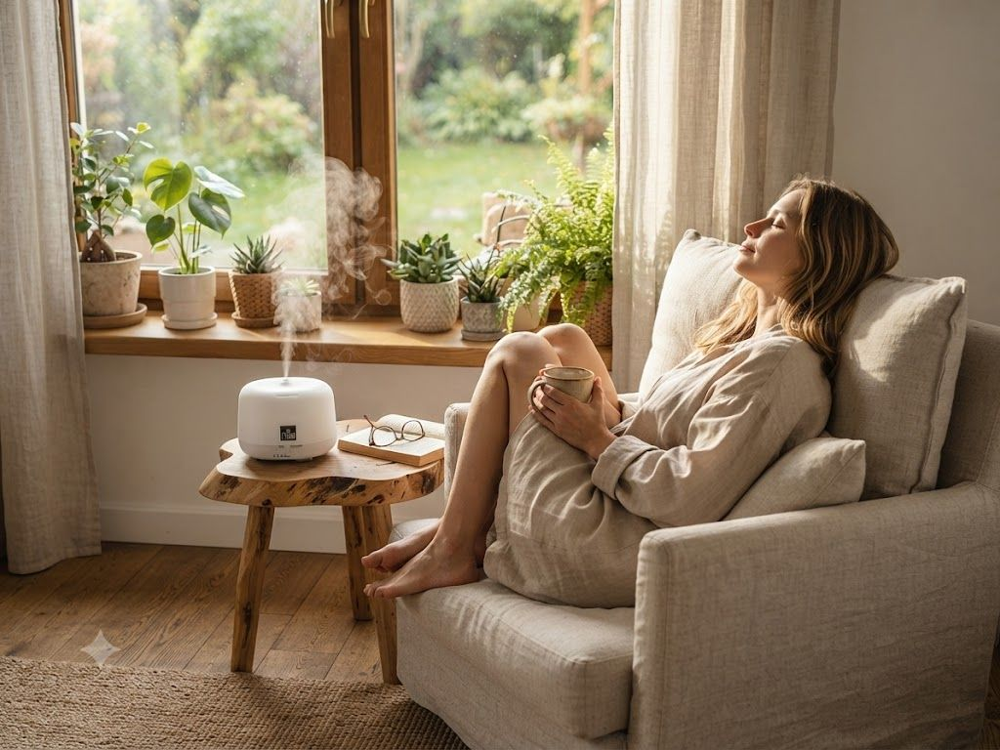

📖 Průvodce · listopad 2026
průvodce pro začátečnice
Aroma difuzér je malý přístroj, který rozptýlí vůni esenciálních olejů po místnosti. Pro začátečnici je to nejjednodušší způsob, jak si oleje vyzkoušet. Ukážu vám, co to je, jak funguje a jak ho používat.

Nejběžnější je ultrazvukový difuzér. Do nádobky nalijete vodu, přidáte pár kapek esenciálního oleje a přístroj z nich vytvoří jemnou studenou mlhu.
Ultrazvukové vibrace rozdělí směs vody a oleje na drobné kapénky, které se nenápadně rozptýlí do vzduchu. Nic se při tom nezahřívá.
Do nádobky nalijte vodu. Nejlepší je destilovaná nebo převařená vychladlá, aby se v přístroji netvořil vodní kámen. Voda z kohoutku také jde, jen difuzér čistěte častěji. Řiďte se návodem svého přístroje.
Nakapejte asi 5 kapek oleje, například levandule nebo citronu. Dávka závisí na síle oleje a velikosti místnosti.
Zpočátku difuzér zapněte na 15 až 30 minut a dobu postupně prodlužujte.
Po použití nádobku vylijte a vyčistěte podle návodu výrobce.
Aroma lampa olej zahřívá svíčkou, kdežto difuzér pracuje bez ohřevu. Teplo oleje rychleji odpaří a může změnit jejich vůni, proto se pro začátečnice doporučuje difuzér.
Místnost větrejte a difuzér nenechávejte běžet nepřetržitě.
U dětí postupujte opatrně, vše najdete v lekci Bezpečnost při používání.
Máte doma kočku, psa nebo ptáka? Použijte difuzér jen krátce, nechte otevřené dveře a přečtěte si lekci Esenciální oleje a domácí mazlíčci.
Začněte asi pěti kapkami a podle potřeby množství upravte.
Na začátku 15 až 30 minut, potom dobu postupně prodlužujte.
Nejlépe destilovanou nebo převařenou vychladlou, aby se netvořil vodní kámen. Kohoutková voda také jde, ale difuzér pak čistěte častěji.
Víc o difuzéru najdete v lekci Difuzér. Pokud si chcete pořídit vlastní, můžete se podívat na aroma difuzér u BEWIT.
Nevíte, které oleje do difuzéru zvolit? Projděte si sekci Témata a vyberte podle toho, co právě potřebujete.
Lekce o difuzéru →Informace na tomto webu mají výlučně informační charakter a nejsou náhradou odborné lékařské péče. · Odkazy vedou na partnerský e-shop Bewit.